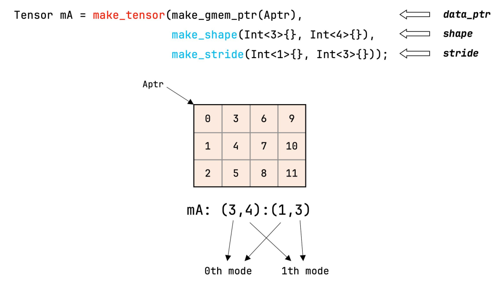

flowchart TD
GlobalTensor["全局张量 Tensor (由指针与 Layout 构成)"] --> Partition["CuTe local_partition(tensor, thr_layout, thread_idx)"]
Partition --> ThreadLocalTensor["每个线程持有的局部切片视图 Tensor"]
ThreadLocalTensor --> Math["线程无锁并行执行局部计算"]
第 3 课：CuTe Tensor、视图与线程分区
参考答案版：包含完整代码实现与问答题深度参考解析。建议先独立完成练习题后再展开核对。
本课目标与完成标准
学完后你应能：区分 engine/layout，解释 tensor view、local_tile 和线程 fragment 的生命周期。
通过必须同时满足：
- 独立补齐本课唯一的代码填空题，并通过给定检查；
- 三个问答题均说明因果链，而不是只报术语；
- 能指出至少一个正确性边界和一个性能取舍；
- 总分不低于 8/10，且没有一票否决级概念错误。
前置关系
- 课程前置：CUDA 线程模型、GEMM、C++ 模板基础
- 本课在路线中的作用：CuTe Tensor 是 Engine 与 Layout 的组合：Engine 提供存储/指针语义，Layout 把逻辑坐标映射到 Engine。
核心心智模型
核心操作与执行流程图解

图 3-1：CuTe API make_tensor 与内存抽象视图
图 3-2：CuTe 张量线程分区（Thread Partitioning）与数据切分流
1. 它是什么，解决什么问题
CuTe Tensor（张量抽象与视图分区） 是连接纯数学布局代数（Layout）与物理硬件存储（HBM、Shared Memory、Register File）的核心载体。
为什么不能只有裸指针或标准多维数组（结合图 3-1 与图 3-2）： - 存储介质与排布算法的正交解耦：在手写 CUDA 中，从 Global Memory 搬运到 Shared Memory、再搬运到寄存器，每个存储层次的索引逻辑完全割裂； - CuTe Tensor 的正交组合： \[\text{Tensor} = \text{Engine (存储引擎 / 指针语义)} + \text{Layout (代数映射函数)}\] - Engine 负责提供对内存或寄存器的访问接口（例如 make_gmem_ptr 代表全局显存、make_smem_ptr 代表片上共享内存、Array<T, N> 代表寄存器数组）； - Layout 负责提供从多维逻辑坐标到该存储介质内部相对偏移的映射； - 零开销视图抽象（Zero-Cost View Abstraction）：构造一个 Tensor 仅仅是把指针和编译期 Layout 结构体打包，不产生任何内存拷贝，不申请任何堆空间；所有的分块切片（local_tile）与线程分区（local_partition）都是对指针和布局的纯静态推导（图 3-1）。
2. 它如何工作（结合图 3-1 与图 3-2）
CuTe 通过三步优雅的代数流水线，将巨大的全局张量切分到各个线程私有寄存器中： 1. 构造全局张量视图（make_tensor）： - 结合全局显存指针与矩阵形状：Tensor gA = make_tensor(make_gmem_ptr(A), make_layout(shape, stride))； 2. CTA 级瓦片切片（local_tile）： - 每个 ThreadBlock（CTA）根据自己的分块坐标 blockIdx.x 与 blockIdx.y，从全局张量中提取属于当前 Block 的局部 Tile 视图： cpp Tensor gA_tile = local_tile(gA, make_shape(BLK_M, BLK_K), make_coord(blockIdx.x, k_tile)); - 这一步依旧是零拷贝视图，返回一个相对于当前 Block 基准指针的局部 Tensor。 3. 线程级数据分区（local_partition，图 3-2）： - 在 Block 内部，通过传入该 Block 的线程拓扑布局（thr_layout）和当前线程索引 threadIdx.x，自动解算出当前线程专享持有的数据切片（Fragment）； - 每个线程获得一个尺寸极小的本地 Tensor（通常绑定在线程私有寄存器中），直接参与后续的数学指令。
3. 正确性条件与常见误区
- 视图生命周期陷阱（Dangling View Hazard）：
- Tensor 只是指针和布局的组合视图，绝不持有或延长底层内存的生命周期；
- 若用栈上临时分配的共享内存数组或局部变量构造 Tensor 并跨作用域传递，一旦底层内存失效，Tensor 会沦为野指针视图，读取时产生静默数据错乱；
- 编译期通过并不保证物理空间合法：
make_tensor是弱约束的视图构造器。只要指针类型和 Layout 类型符合 C++ 语法，哪怕传入的指针只有 1 字节有效空间，而 Layout 的cosize高达 1 GB，代码依然能 100% 顺利编译通过；只有在硬件实际发生访存越界时才会崩溃。
4. 性能与工程取舍
- 类型擦除 vs. 纯静态泛型推导：
- CuTe Tensor 全程利用 C++17/20 模板元编程，在编译期将多层 Tile 切片推导直接折叠为单条 SASS 内存寻址指令；
- 相比于传统 PyTorch Tensor 的动态元数据调度，CuTe Tensor 拥有极致的零运行时开销，完全消除了任何动态下标解析逻辑；
- 寄存器 Fragment 的紧凑性与独立步长：
- 全局张量
gA的 Stride 通常很大（如包含成千上万的 Leading Dimension）； - 而通过
local_partition提取出的寄存器张量，其底层 Engine 是线程私有的硬件寄存器组，其 Stride 必定被折叠为致密紧凑的小步长（通常是 1 或 2），使得寄存器访问效率达到物理极限。
- 全局张量
具体演示：全局张量到线程 Fragment 的切分全景
假设有一个全局行优先矩阵 \(A_{8 \times 8}\)（FP16，行步长为 8，列步长为 1）： 1. 全局视图定义： - Shape = (8, 8), Stride = (8, 1)； 2. CTA 级分块（local_tile）： - 设当前 Block 分配的瓦片大小为 \(4 \times 4\)； - Block 坐标为 \((0, 0)\)，则 gA_tile 覆盖行 \(0 \sim 3\)、列 \(0 \sim 3\)； - 此时 gA_tile 依然继承了全局的大步长（跨行步长仍为 8），只是逻辑坐标原点平移到了当前 Block 的起始位置； 3. 线程级分区（local_partition）： - 若 Block 包含 4 个线程，线程按行优先排布为 \(2 \times 2\) 拓扑； - 线程 0（threadIdx.x = 0）负责偶数行和偶数列，获取到 \(2 \times 2\) 的局部切片； - 当调用 copy(gA_partition, rA_fragment) 时，数据才真正从全局显存被指令硬件加载进线程 0 的专属寄存器中，完成由“全局大步长显存视图”向“紧凑寄存器私有实体”的物理流转。
实践任务：唯一代码填空题
补齐二维 row-major tensor 的全局内存 layout。
规则：只能修改 TODO/______ 所在位置；不要删除断言或放宽误差。代码注释说明了每个边界条件。
Code
%%writefile /tmp/cute_tensor.cu
#include <cute/tensor.hpp>
using namespace cute;
template<class T>
auto make_matrix_view(T* ptr, int m, int n) {
auto shape = make_shape(m, n);
auto stride = make_stride(______, ______); // row-major, leading dimension n
return make_tensor(make_gmem_ptr(ptr), make_layout(shape, stride));
}检查方法
静态检查 (1,0) 映射到 n、(0,1) 映射到 1；有 CUTLASS 环境再编译。
提交时请给出：补齐后的代码、实际运行输出（环境不可用时注明“仅静态审查”）以及对失败用例的解释。
Q1
不要背定义：请从输入、状态变化和输出三个阶段解释“CuTe Tensor、视图与线程分区”的工作机制。
你的答案：
Q2
为什么 make_tensor 成功编译不能证明 pointer/layout 匹配？
你的答案：
Q3
同一逻辑 shape 的 gmem tensor 与 register fragment 为什么 stride 常不同？
你的答案：
评分与通过规则
- 代码 4 分：正常输入 2 分，边界输入 1 分，解释实现 1 分；
- Q1～Q3 各 2 分；
- 一票否决：结果碰巧正确但核心因果链错误、删除边界检查、把未运行结果说成实测。
需要提示时按四级机制请求：概念区域 → 具体方向 → 关键局部 → 完整答案。